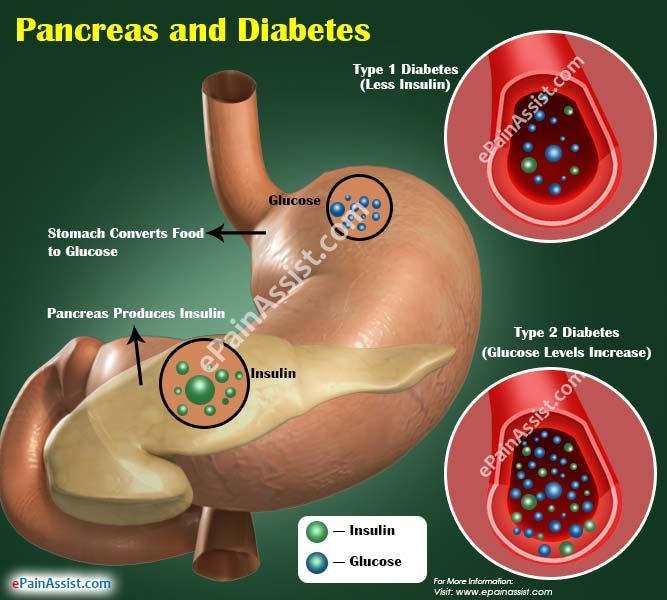

Diabetes

SYMPTOMS:
The general symptoms of diabetes include:
- increased hunger
-
increased thirst
-
weight loss
-
frequent urination
-
blurry vision
-
extreme fatigue
-
sores that don’t heal
Type 1 Diabetes
- extreme hunger
-
increased thirst
-
unintentional weight loss
-
frequent urination
-
blurry vision
-
tiredness
Type 2 diabetes
- increased hunger
-
increased thirst
-
increased urination
-
blurry vision
-
tiredness
-
sores that are slow to heal
CAUSES
Type 1 diabetes
Doctors don’t know exactly what causes type 1 diabetes. For some reason, the immune system mistakenly attacks and destroys insulin-producing beta cells in the pancreas.
Genes may play a role in some people. It’s also possible that a virus sets off the immune system attack.
Type 2 diabetes
Type 2 diabetes stems from a combination of genetics and lifestyle factors. Being overweight or obese increases your risk too. Carrying extra weight, especially in your belly, makes your cells more resistant to the effects of insulin on your blood sugar.
This condition runs in families. Family members share genes that make them more likely to get type 2 diabetes and to be overweight.
DIAGNOSIS:
Doctors use these blood tests to diagnose prediabetes and diabetes:
- The fasting plasma glucose (FPG) test measures your blood sugar after you’ve fasted for 8 hours.
-
The A1C test provides a snapshot of your blood sugar levels over the previous 3 months.
TREATMENT
Type 1 Diabetes
Insulin is the main treatment for type 1 diabetes. It replaces the hormone your body isn’t able to produce.
There are four types of insulin that are most commonly used. They’re differentiated by how quickly they start to work, and how long their effects last:
- Rapid-acting insulin starts to work within 15 minutes and its effects last for 3 to 4 hours.
-
Short-acting insulin starts to work within 30 minutes and lasts 6 to 8 hours.
-
Intermediate-acting insulin starts to work within 1 to 2 hours and lasts 12 to 18 hours.
-
Long-acting insulin starts to work a few hours after injection and lasts 24 hours or longer.
Type 2 Diabetes
- Diet and exercise can help some people manage type 2 diabetes. If lifestyle changes aren’t enough to lower your blood sugar, you’ll need to take medication.
-
These drugs lower your blood sugar in a variety of ways.
-
You may need to take more than one of these drugs. Some people with type 2 diabetes also take insulin.